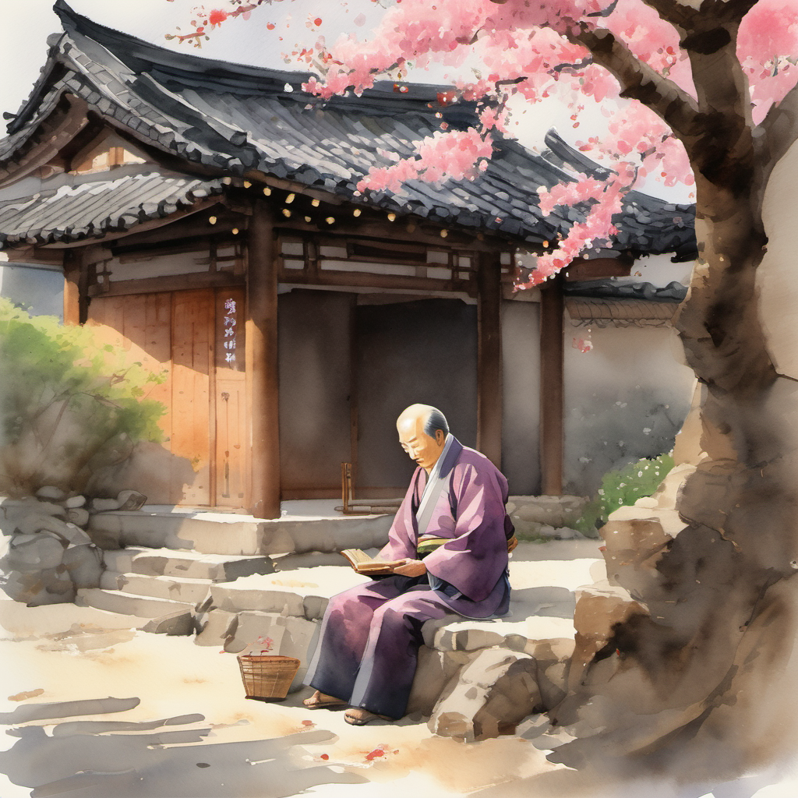
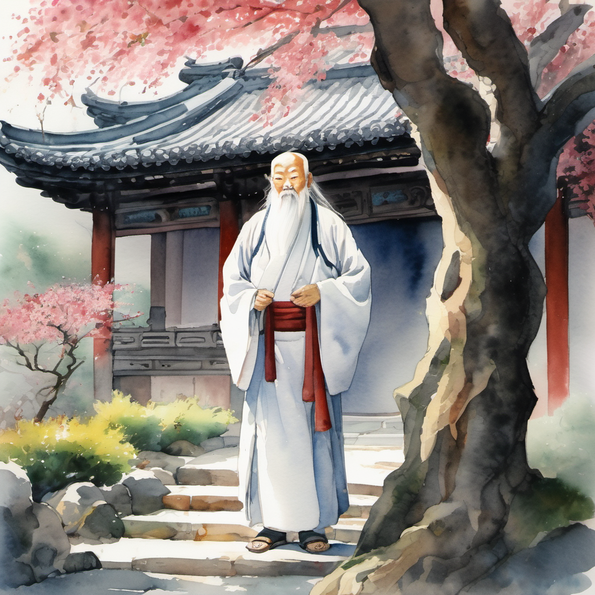
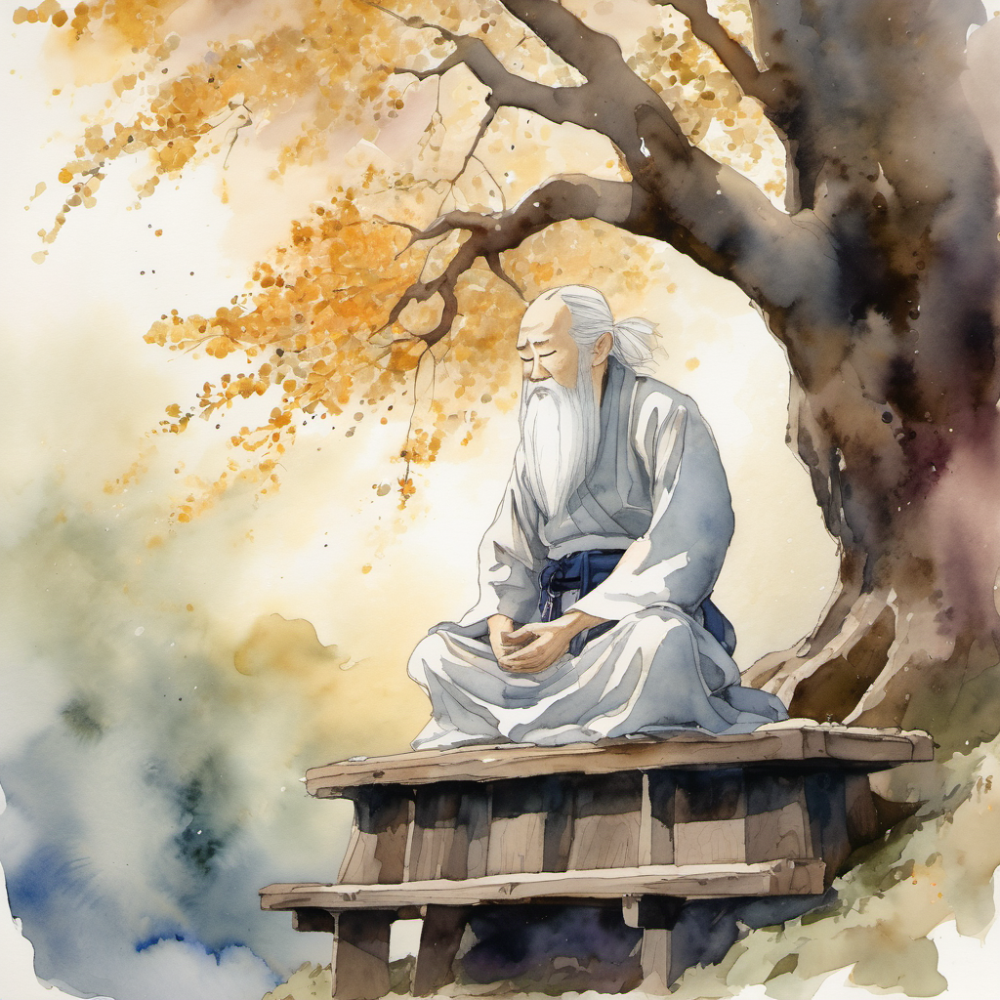
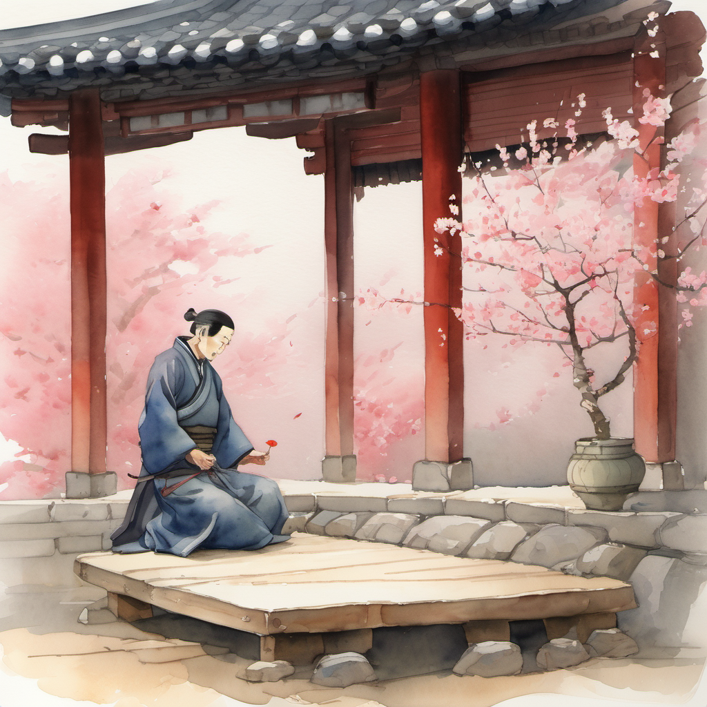
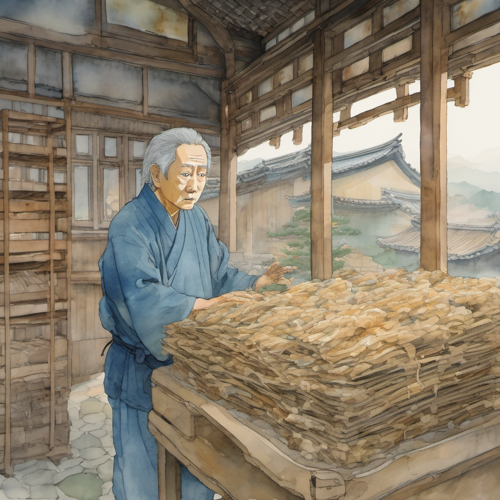
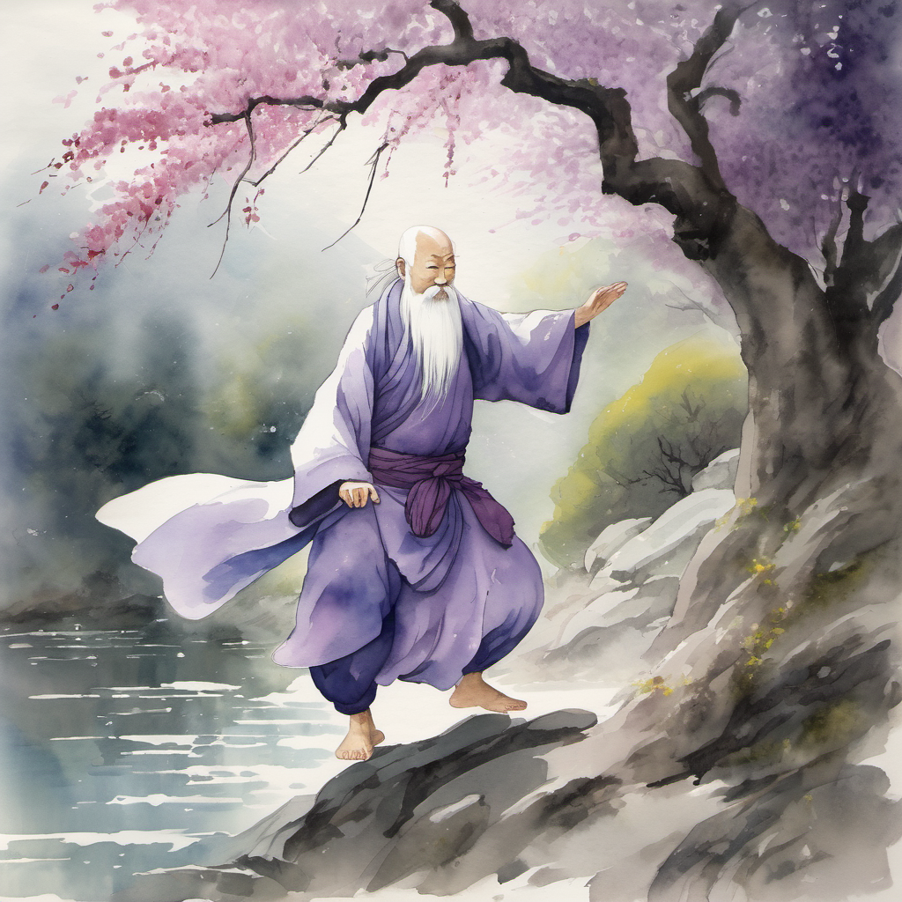
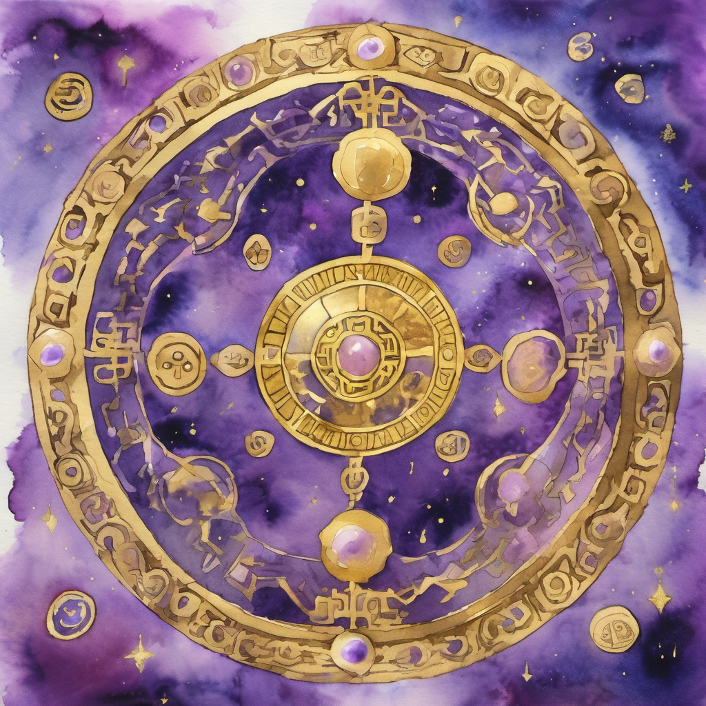
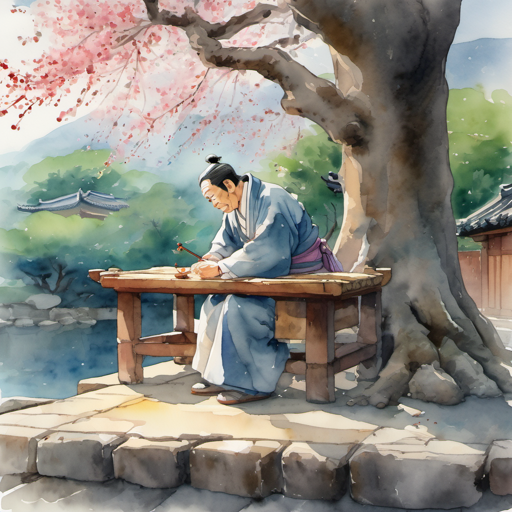

매화나무 마당의 비급

신단수 광장의 그 시험 후 — 사흘이 — 지났다. 일행은 — 개성 시장의 — 무당파 객점에서 — 머물렀다. 한옥의 마당에는 — 한 그루의 — 매화나무가 — 서 있었다.
매화나무 아래에서 — 정주는 — 도성이 빌려준 「태극검결(太極劍訣)」 비급을 — 한 번 — 읽었다. 비급의 첫 줄은 — "동(動) 가운데 정(靜)이 있고 — 정(靜) 가운데 동(動)이 있다" — 였다.
50대 노동자의 — 시각으로 — 읽으면 — "야간 알바 가운데 — 휴게 — 가 — 있고 — 휴게 — 가운데 — 야간 알바 — 가 — 있다."
무명(無名) — 장삼봉의 직접 인용

매화나무 아래에 — 그때 — 한 노인이 — 등장했다. 흰 수염. 흰 도복. 그러나 — 도성보다 — 한 단계 — 위. 본 노인은 — 90대 후반. 흰 수염이 — 무릎까지 — 길게 — 늘어졌다. 손에는 — 검 — 이 — 없었다.
검을 들지 않은 무당파의 본 본 사부 — 라는 것은 — 그가 — 무당파의 — 본 어른 — 즉 — 김용 풍 의천도룡기의 — 장삼봉 — 의 — 직접 — 인용 — NPC — 라는 — 의미 — 였다. 노인의 이름은 — 무당의 무명(無名).
이름이 없는 것이 이름이오

본 질문 — 무공은 무엇을 따르오?

김용 선생의 의천도룡기에서 장삼봉이 장무기에게 했던 그 질문 — "그대의 무공은 — 무엇을 — 따르는가" — 의 정확한 응용. 장무기는 그 질문에 "어머니" 라고 답했다. 정주는 — 어떻게 — 답할 — 것인가.
정주는 — 한 번 — 침묵했다. 매화 꽃잎이 — 또 한 장 — 떨어졌다. 이번에는 — 정주의 — 무릎 위에. 정주의 무릎이 — 한 번 — 시큰거렸다.
정주의 답 — "최저시급"

무명이 — 한 번 — 깊은 — 한숨을 — 쉬었다. 무명은 — 본 화에서 — 정주에게 — 자기 무공의 — 한 — 단계 — 위 — 의 — 박자를 — 들었다. "도(道)" 위에 — "최저시급"이 — 있었다.
무명 흡수 — 의천도룡기 본맥

그리고 — 무명이 — 한 번 — 발을 — 한 걸음 — 앞으로 — 내딛었다. 진(進) — 그러나 — 진(進) — 이 아니었다. 무명의 발이 — 한 번 — 진(進) — 으로 — 가다 — 한 번 — 들쭉날쭉으로 — 흔들렸다.
김용 풍 무당파 태극권의 — 본 본 박자가 — 한 번 — 정주의 작두 박자로 — 변형되었다. 무명이 — 정주의 작두 박자를 — 한 번 — 자기 태극권에 — 흡수했다.
49년 봉인 → 무한 봉인 ⭐

비급 첫 줄 — 노동자 변형

무명이 — 평상을 — 한 번 — 떠났다. 매화나무 아래에서 — 그가 — 사라졌다. 본 화의 — 무당파의 — 본 본 본맥이 — 정주에게 — 49년 봉인의 — 한계를 — 무한 봉인으로 — 확장하는 — 한 단계 — 위 — 의 — 진실을 — 알려 주었다.
정주는 — 평상 위의 「태극검결」 비급을 — 한 번 — 다시 — 폈다. 비급의 첫 줄이 — 다시 — 보였다 — "동(動) 가운데 정(靜)이 있고 — 정(靜) 가운데 동(動)이 있다."
정주가 한 번 — 그 줄을 — 자기 톤으로 — 변형 했다.
도비 신수는 — 인천 옥탑방에서 — 한 번 — 더 — 발바닥을 — 펼쳤다. 본 화의 — 무명의 — 한 — 단계 — 위 — 진실을 — 도비 신수가 — 발바닥으로 — 한 번 — 받았다. 그러나 — 도비 신수는 — 아직 — 잠을 — 깨지 — 않았다. 39화까지 — 더 — 잠을 — 자야 — 했다.
(2권 8화 끝)